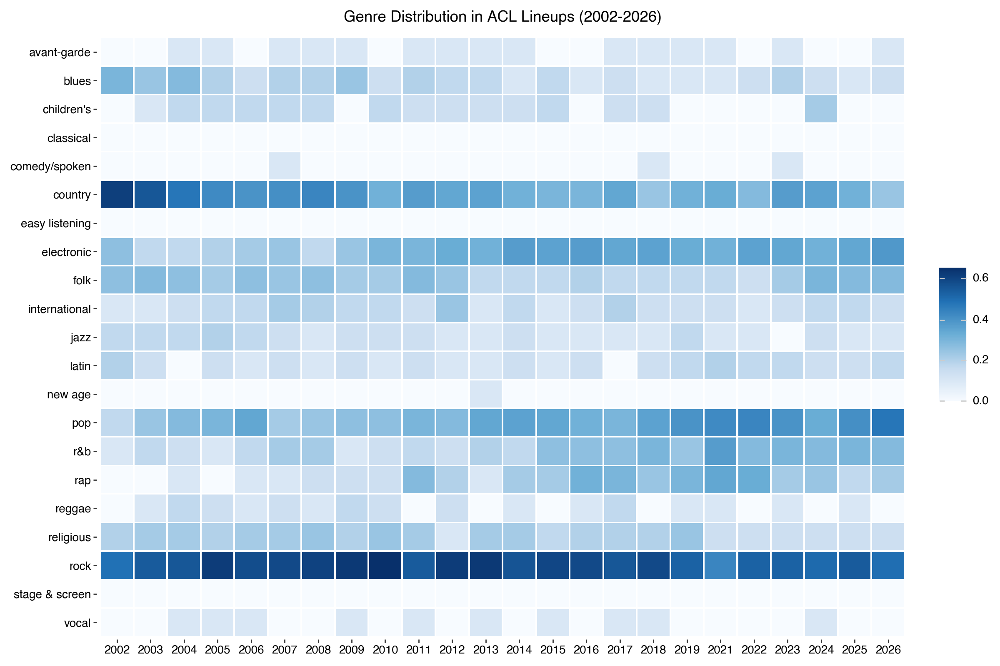
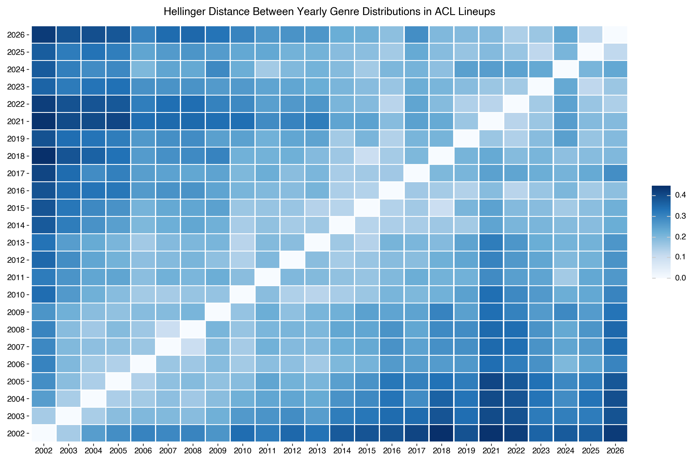
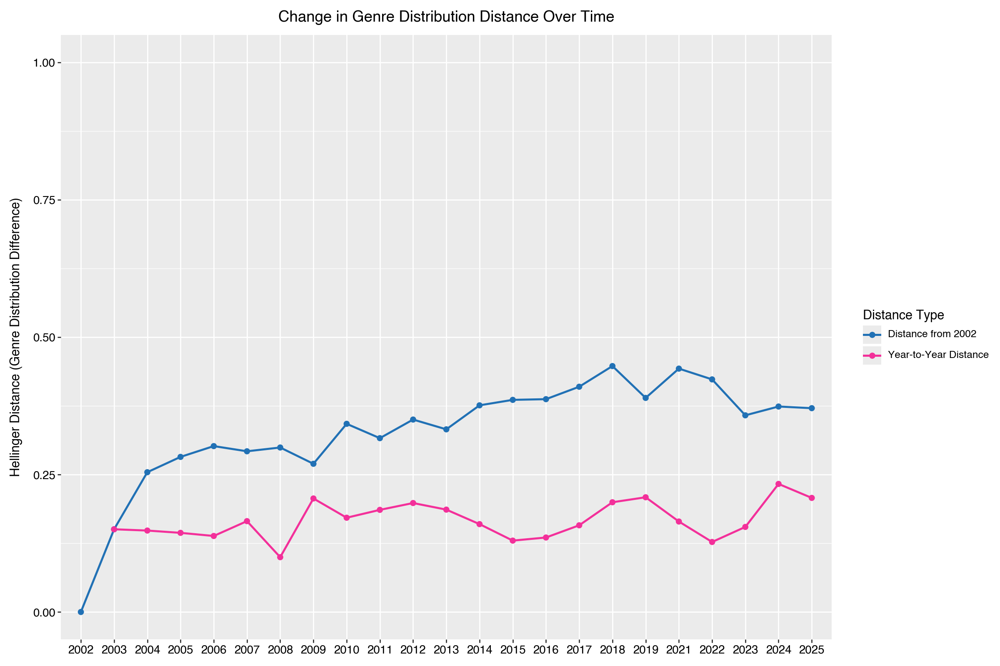
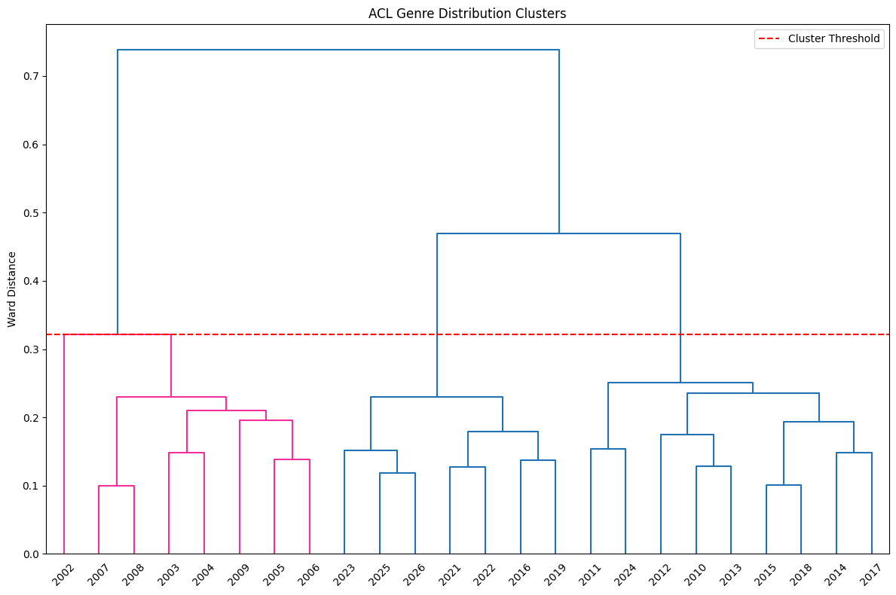
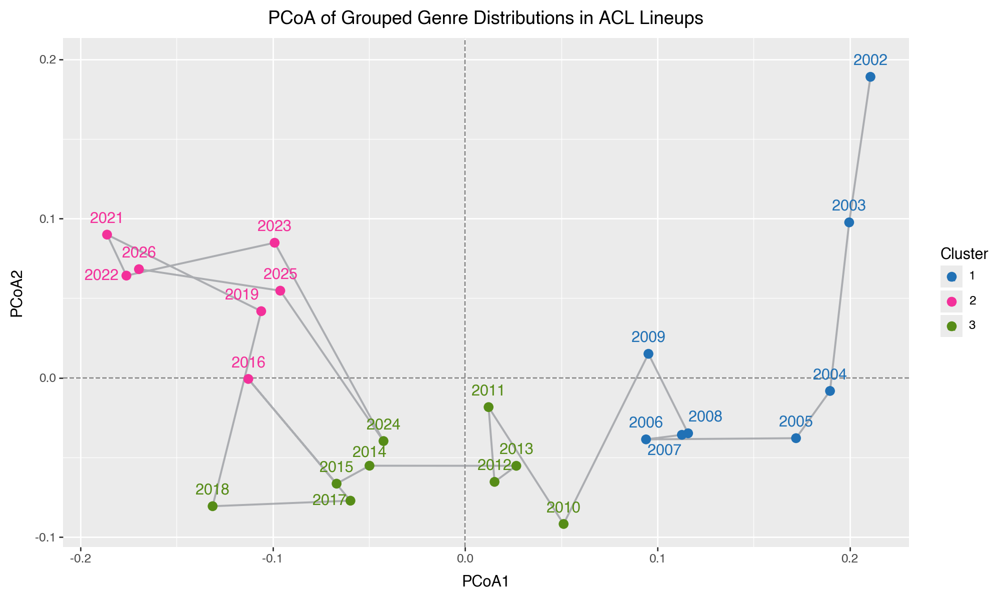
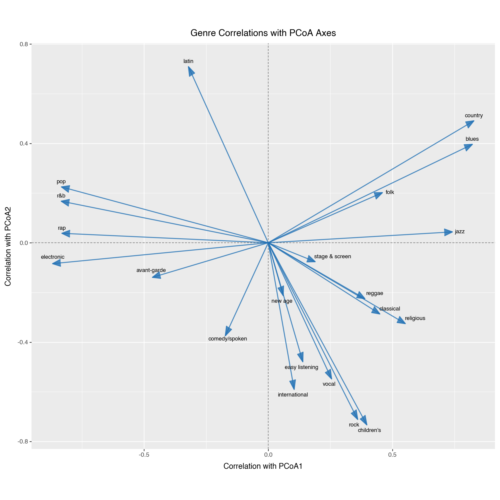
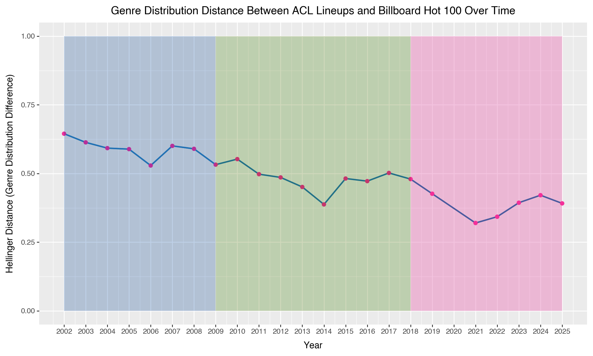
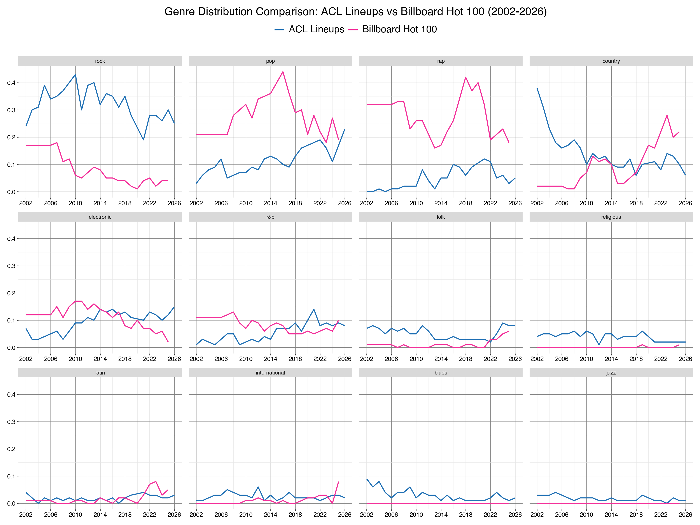

Measuring Change in the Austin City Limits Music Festival
Brandon Jerome
06/18/2026
Introduction
The early tendrils of summer were beginning to creep in. Some were saying it may be unusually hot since the cicadas were already starting to buzz awake. Every year in these first few days of May, a text goes out in the Austin, Texas area. The text is an announcement of the awakening of Austin City Limits (ACL), a large scale music festival held each fall. With a lineup in hand, the disparate groups who attend the two weekend long festival eagerly dissect this year’s headliners and supporting acts. Professionals in offices, teenagers in class, nurses on break, and everyone in between lose focus for a few minutes letting glazed eyes scan top to bottom and side to side before deciding “yes” or “no”. A binary decision usually held with unshakable resolve signifying a like or dislike of the lineup similar to a roman emperor deciding the fate of a gladiator. It’s been this way for as long as I can remember, either you love the lineup or you hate it. Instagram comment sections fill with despondence, a product of the festival or the algorithm who knows, but always a recurring theme emerges “The ACL lineups used to be good”.
I set out to understand what the implied change in festival lineups really means. Is it true ACL has changed over time, not just in size and cost, but in it’s sonic profile? If yes, how has it changed, and are there any clues as to why?
Data Collection
ACL has a 24 year career beginning in 2002 as a one weekend event where initial projections of 25,000 attendees were far surpassed by the 42,000 who showed up (KVUE Article). Each year the festival hosts on average 120+ musicians making the task of data collection no small feat. Luckily, I was able to pull lineup information for each year from wikipedia lists utilizing web scraping and parsing scripts. The lineup data set contained 4,045 unique artist/year/weekend performances and became the backbone of all future work.
To generate sonic profiles over time I first needed to imbue each artist in the data set with a list of genres that describe their music. The task of genre classification was broken down into three parts; obtaining unique Spotify ID’s for each artist, pulling sub genre metadata for each artist, and finally classifying returned sub genres into parent genres.
Spotify Unique ID’s
Spotify has a search API where plain text artist names can be queried and Spotify catalog information matching the query are returned. This process mimics the search bar used in app. As a user of Spotify or other streaming services you know that this search process can be quite finicky with respect to returned information. To help alleviate false positives when I searched artist names I limited the amount of responses from the search API and marked returns as successful only if the queried name and the returned name exactly matched. For all non-successful cases, which was a majority, I manually reviewed the returned information. Often this would mean accepting the difference between a query of “The Mumford and Sons” and a returned “Mumford & Sons”, but in many cases this required searching the internet for news articles, personal websites, or YouTube videos to find artist Spotify ID’s and verify they played at ACL. Of the 2318 unique artist values searched I was able to find 2233 Spotify ID’s representing 96.3% of artists. The majority of remaining musicians with no Spotify ID’s are local Austin area choirs, schools of rock, and gospel singers. This process was by far the most time consuming portion of the project, but I learned a lot about the nuances of scraping user input information.
Pulling Artist Metadata
Utilizing the Spotify ID’s for each artist, I pulled information like followers, current monthly listeners, and sub-genres from resources like Chosic, Everynoise, and Apify. For 86% of artists this information was readily available however for smaller, newer, or more niche artists there was not always reported sub genre data. I was able to fill in missing data for 10% of artists with related artist genres, reported by some of the resources listed above, and for the remaining 4% I manually entered sub genre information from articles, playlist descriptions, and other online sources.
Classifying Sub Genres into Parents
To create a taxonomy for sub genre and parent genres I first utilized data from the AcousticBrainz Genre Dataset, which is a “large-scale collection of hierarchical multi-label genre annotations” of songs that can be used for the purpose of training systems to add sub genre tags to unknown songs. This data set has four parts that each come from an online metadata website. I used the sub/parent genre classifications from AllMusic. You can read more about the taxonomy and distributions here. The AllMusic data set is “based on editorial metadata databases maintained by music experts and enthusiasts”, and has hundreds of sub genres tied to 20 parent genres with examples like: blues, country, electronic, pop/rock, and r&b. This information was merged with my artist sub genre data and any sub genres that were not found in the AllMusic data set were attached to parents manually, with the help of GPT-5.4. This was the only part of the project with major support, other than research, that came from a large language model, but I found the summarization and classification skills of the model well aligned to classifying sub genre names with given parent genres. The last major change made to my genre taxonomy was to separate pop/rock into distinct genres, which again was done by hand with support from GPT-5.4. This work gave me a taxonomy data set that contains 21 parents genres linked to 1652 sub genres.
After completing genre classification for artists I was left with a clean data set that contained unique ID’s, lists of sub genres, mapped parent genres, and Spotify monthly listeners for each artist. The following is an example row for the artist Grimes.
| id | 053q0ukIDRgzwTr4vNSwab |
| parent | [‘avant-garde’, ‘electronic’, ‘rock’, ‘electronic’, ‘pop’, ‘electronic’] |
| subgenre | [‘art pop’, ‘canadian electropop’, ‘grave wave’, ‘indietronica’, ‘metropopolis’, ‘neo-synthpop’] |
| popularity_final | 70 |
| followers_final | 2733729 |
| name_final | Grimes |
| genre_source | spotify |
To create a sonic profile for each year of ACL I needed to transform each artist’s genre profile into numerical values. There are many ways to do this but I chose to create a proportional distribution of parent genres per artist. Grimes’ genre profile became the following.
| id | 053q0ukIDRgzwTr4vNSwab |
| name_final | Grimes |
| avant-garde | 0.16 (1/6) |
| electronic | 0.5 (3/6) |
| rock | 0.16 (1/6) |
| pop | 0.16 (1/6) |
Using the proportional distribution allows for artists to contribute towards multiple genres which feels more aligned with the nature of music while ensuring that each artists total contribution is the same. For each year of ACL I then sum all artist genre contributions who performed that year and again calculate the proportion of each parent genre within each year.
Analysis of Change
Armed with unique genre distributions for each lineup of ACL, except for 2020 when the festival was cancelled, I can now attempt answering if the ACL lineup has changed. Figure 1 depicts the distribution of each genre with a square root transformation allowing for more clear distinctions at lower percentages. The most obvious change over time is a decrease in the proportion of Country and Blues music in the ACL lineup, falling from ~47% of the lineup in 2002 to just ~7% in 2026. In conjunction with the decline of Country there is a rise of Pop, Electronic, and R&B. One note of interest follows the ascendance and decline of Rap music, which reached a peak in 2021 with performances from Tyler the Creator, Megan Thee Stallion, Doja Cat, Jack Harlow, Polo G, and others. Unknown then, these artists may have been performing last rites for the rap experiment at ACL.

Given that each year is a distribution of genre proportions we can think of them as being unique DNA vectors with measurable distances between. These distance values can be used to understand the changes over time in one value rather than attempting to visually identify subtle differences between 21 genres. I used the Hellinger Distance, which measures the overlap between the assigned probabilities of a unique event from two different distributions, to obtain distance metrics between every year combination resulting in a pair-wise distance matrix visualized by Figure 2.

In Figure 2 off diagonal values increase in distance with respect to time, especially when compared to the years 2002-2005, lending evidence for the idea that the ACL lineup has continuously diverged from historical genre makeups. This is further exemplified in the line plot on Figure 3 which details the Hellinger Distance from 2002 to every other year along with the year-to-year change in distance.

There is implication in Figure 3 that the genre makeup of ACL has significantly changed when 2002 is used as a benchmark for comparison. For long time Austinites, the distance from 2002, represented by the blue line in Figure 3, may look like the smoking gun of a change unrequited. If the 2002 ACL lineup was the antithesis of all things good for ACL, then this graph could be re-titled “Every day we stray further from God”. I think there is more nuance than this graph shows. The year-to-year change, highlighted by the pink line, shows relative stability over time, but there are a few sudden shifts like the ones at 2009 and 2018.
Despite your opinion on the current state of the ACL lineup in comparison to past years, Figures 1, 2, and 3 lend strong evidence to suggest that the lineup has materially changed over time. Now it’s important to understand what exactly has changed in ACL’s sonic profile.
Analysis of Reason
There is evidence suggesting the genre distribution has changed historically, but it’s also clear in Figures 2 and 3 that there appear to be periods of time where the lineup remained consistent year over year. This led me to think there were eras of similarity that were interrupted by trend shifts. To identify eras in the ACL lineup I grouped the years by distance using hierarchical clustering, a process that continuously merges data points based on proximity until all points have been merged into one group. Figure 4 visualizes the groups created and details 3 distinct clusters, which minimize vertical distance (merge cost), that fall below the red dotted line.

An intriguing note from the dendrogram is the fact that the years (2009 and 2018), which had the strongest year-to-year swings from Figure 3, generally show up as the final chronological years of their groups. Taking each year and it’s assigned group label, I then converted the 1 dimensional distance values into 2 dimensional representations, using Principal Coordinate Analysis (PCoA). This technique utilizes the pairwise distance matrix and attempts to calculate coordinates for each data point that most closely recreate the distance values from the matrix. Figure 5 plots the clustered groups on the calculated PCoA dimensions, which account for 65.49% of the variation in the distance data. The Grey path connects years in chronological order and shows that for the most part each group is a set of consecutive years. Group 1 consists of the formative years from 2002-2009, Group 2 contains the middle years of 2010-2018 (with the exclusion of 2016 and inclusion of 2024), and the final group has the most recent years spanning 2019-2026.

Given the newly defined PCoA dimensions I then calculated the correlation between each parent genre and the PCoA dimensions. This correlation can be used to identify which genres are most associated with each dimension and can point towards what may be different between the identified groups. These correlations are plotted in Figure 6 as vectors with length and direction indicating intensity of correlation with each PCoA axis. When the information from Figures 5 and 6 is combined, one begins to understand the differences and similarities between the groups. For example: Country, Blues, Jazz, and Folk are strongly correlated in a positive direction with PCoA1 while Electronic, Rap, R&B, and Pop are negatively correlated. Our formative years (Group 1) are aligned most positively along the PCoA1 axis, so it can be inferred that the genre makeup of these years has more Country, Blues, Jazz, and Folk and less Electronic, Rap, R&B, and Pop, which is confirmed using Figure 1.

Continuing this line of inference there are three sonic periods of ACL which intra-group have similar genre makeups and inter-group are separated by trend shifts. The early years (Group 1) were defined by Country and Blues while the middle years (Group 2) were a transitional period led by Rock, and the later years (Group 3) are correlated with Pop, Electronic, Rap, and R&B. One interesting observation from Figure 6 is the strong positive correlation of Latin music with the PCoA2 axis and how that relates to more recent years’ (2022+) lineups.
The correlations from Figure 6 can be used to understand what the differences and similarities between identified sonic periods may be but it does not identify a cause for the shifting trends over time. I became intrigued with the idea that the ACL lineup “went mainstream” by following popular trends rather than maintaining a unique profile.
The Billboard Year-End Charts are lists organized annually that aggregate and rank the top songs and artists for each year using metrics like streaming activity, radio play, and sales. I believe they are a great indicator of mainstream popularity for songs and can be transformed into measures of genre popularity using the artist information from each song. I downloaded year end charts from 2002-2025 using the Billboard Python Package and then tagged each song/artist pairing with genre information. This genre tagging process matched the one described in the data collection section ensuring standardization across the ACL and Billboard data sets. Rank was not used to weight genre contribution per year.
Figure 7 plots the Hellinger Distance between the ACL lineup and Billboard Hot 100 genre distributions over corresponding years. A higher value indicates a larger difference between the two distributions. The background of the plot is highlighted based on the sonic time periods of ACL found earlier using hierarchical clustering (see Figure 5). In general there is a negative slope over time signifying a convergence of genre distributions between ACL and Billboard Hot 100. This convergence lends evidence to the idea that the genre distribution of lineups at ACL have grown closer in similarity to what is most popular.

While it feels fair to say ACL lineups have historically become more mainstream it’s unclear if that is intentional. One could posit that the popularity of songs and therefore genres has become more intertwined with festival appearances or that ACL organizers would have booked mainstream artists in the early years but could not afford to. What is clear is that not all genres between the ACL and Billboard Hot 100 distributions move in lockstep.
In Figure 8 there are examples of the distributions moving together over time through Pop, Rap, R&B, and Folk but also disjunction in Rock, Country, and Electronic music. The biggest gulf between the two distributions starts in 2007 when the charting popularity of Rock began to degrade yet the prevalence of Rock music increases or maintains proportionality in ACL lineups. Country music depicts an even more interesting example of a dichotomy in ACL lineups and overall popularity. What used to be a high proportion genre of ACL has fallen dramatically overtime while a mainstream resurgence has simultaneously occurred.

Given the evidence provided by Figures 4, 5, and 6 I can confidently say there appears to be sonic periods where different genres became the main focus of the festival’s lineups. However, this increased focus does not appear to be a distinct product rather something that followed popular tides, as evidenced by Figures 7 and 8.
Conclusion
There is evidence to show based on sonic profiles that the ACL Music Festival has changed over time, has three unique eras correlated with specific genres, and has more closely tracked mainstream popularity over time. In a city where the only constant is change it should be no surprise that a beloved bastion of musical entertainment has empirically changed over time. There are innumerable arguments to be made in opposition and defense of a more mainstream lineup but deep down my feeling is glum. It feels more and more like businesses operate with short sided intention to maximize hollow values. Like a hypnotized subject we forget the virtues of difference and uniqueness as long term value creators.
Something that makes me feel better is the recognition of the size of ACL with 120+ artists per year, ranging from the stadium star to local band, there will always be incredible music to hear. During this project I discovered and listened to many new artists by reading past ACL lineups. I learned about Troy Campbell a local Austin singer-songwriter who co-founded the band Loose Diamonds and Rodríquez who’s incredible story was captured in the 2012 documentary Searching for Sugar Man.
If the ACL Music Festival functions as a part of the fabric of Austin lessons from the festival can be extrapolated to the city. We might conclude that Austin has become more mainstream over time, but the character and charm dedicated to “keeping Austin weird” are still there you just have to spend time finding it.
Next Steps
There are many areas that could be improved or experimented with in this project. I have listed some below.
More rigorous process for verifying artists on the ACL Lineup
Increased validation for attached genre tags for each artist
Better insight into the diversity of genres represented in the ACL Lineup
Experiment with weighting genre contributions by historical monthly listeners, followers, or song rank (specifically for Billboard Hot 100)
Grade ACL Lineups based on artist growth over time (prior to performance and after)